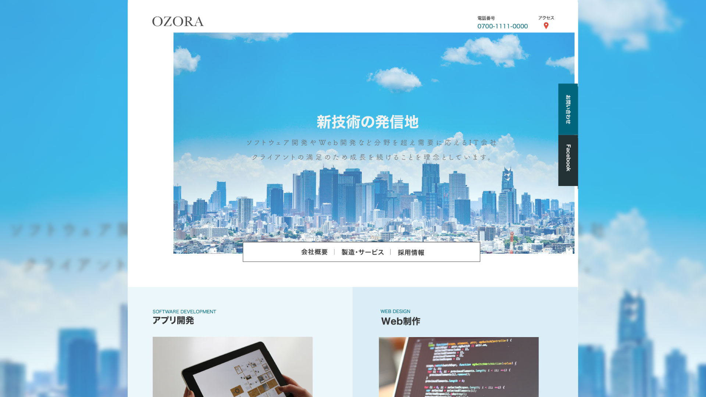

Web



Graphic


Profile
小池和輝(kazuki koike)
九州産業大学 芸術学部 ソーシャルデザイン学科 情報デザイン専攻
福岡工業大学短期大学部を卒業後、現在の大学へ編入学し主にWebデザインやグラフィックデザインを学んでいます。研究ではWebやデザインを活用した音楽制作に役立つサイトをテーマにWEB制作を行なっています。
スキル
Web制作
HTML5.CSS3.Javascript.Jquery.Githubなどを利用しWebサイトの設計からアップロードまで行えます。Wordpressでのサイト構築の学習も行なっています、また以前には複数人でのWeb開発も経験があります。
デザイン
Photoshop.Illustratorを用いてポスターやパンフレットのデザインを制作できます。コンセプトやイメージに合わせたデザインを心がけています
イラスト
Iluustratorを用いたベジェ曲線のイラストをメインに作成しています。デフォルメ系のイラストが得意です
Operator Fan (Webデザイン/コーディング/イラスト制作)
https://kzhub.github.io/operatorfan/index.html
Tool:HTML.CSS.Atom.Github.Illustrator
ソフトウェアシンセサイザーのプリセットを公開し、誰もがシンセサイザーを使いやすくなる事を目的としたサイト。 分かりにくさのあるシンセサイザーに対して、取っ付きにくさを無くす為のサイトデザイン


Hair Salon COS(Webデザイン)
Tool:Illustrator
オリジナルのシャンプーが売りの架空美容院Webサイト
ターゲット:20代~女性
目的:店の周知/イメージ作り
セリフ体とサンセリフ体を組み合わせたデザインにすることで
モダンな要素とクラシックな要素をミックスしている。セリフ体は細いウェイトを利用することでより洗練された印象を与えるようにした。
茶葉工房 (Webデザイン)
Tool:Illustrator
お茶や紅茶を販売する会社を想定したランディングページ
高級志向・大人向けをテーマとしたデザインのためテクスチャや枠線、透明感を与えるためのドロップシャドウを利用した。
OZORA (Webデザイン)
Tool:Illustrator
架空IT企業のコーポレートサイト
信頼が置ける企業イメージにするため全体を青と白を基調とした色でまとめ、文字や写真のコントラストを薄めにすることで清潔感のあるデザインとした。
RCARS (Webデザイン)
https://kzhub.github.io/rcars/
Tool:Illustrator
アウトドアスタイルが特徴のレンタカー会社Webサイト
ターゲット:20代~家族・夫婦
モダンな印象を与えたいため英語
フォントはProxima Novaを利用し、日本語フォントは筑紫B丸ゴシックを使用しトラッキングを広めにすることで高級感があり落ち着いた印象を与えるようにした。
BeatToolJP (Webデザイン/コーディング/イラスト制作)
https://kzhub.github.io/Ksamples/
Tool:HTML.CSS.Javascript.Atom.Github
サンプルパックなどの音楽制作に役立つ素材を無償で配布し、気軽に利用できるサイトがコンセプト
気軽にサイトを使用してもらえるようフォントは洗練されているが優しい印象を持つAvenirを使用
レコードなどのフィジカル要素を加えデザインすることでより興味を持ってもらいやすいデザインとした

Synthesizer illustration 1
Tool:Photoshop.Illustrator
Operator Fanで利用する為制作したイラスト。実際に存在するモノフォニックシンセサイザーを元に親しみやすくする為デフォルメを行った。Illustratorでイラスト制作後にPhotoshopでテクスチャを加えている。

Synthesizer illustration 2
Tool:Photoshop.Illustrator
Operator Fanで利用する為制作したイラスト。実際に存在する日本製FMシンセサイザーを元に親しみやすくする為デフォルメを行った。Illustratorでイラスト制作後にPhotoshopでテクスチャを加えている。

Synthesizer illustration 3
Tool:Photoshop.Illustrator
Operator Fanで利用する為制作したイラスト。大元となったソフトウェアシンセサイザーを元にデザイン。

PC教室バナー
Tool:Illustrator
架空のPC教室バナー
SOTTO
Tool:Illustrator
新たにオープンするモダンで洗練された美容院を想定したA4チラシデザイン。コンセプトに合わせ文字組みフォント選びを工夫している。

NeoGuitarMuseum
Tool:Photoshop
架空のギター展覧会を想定しデザインしたA3ポスター。Neoと展覧会の名前に付くように近代的な印象を与えるデザインを心がけた。

LUXE
Tool:Illustrator
高級志向のケーキ屋を想定したA4三つ折りパンフレット。コンセプトに合わせた色使い、情報のまとめ方を意識し制作。


キャンペーンバナー
Tool:Illustrator
架空のキャンペーン用バナー
Ya/Mofo
Tool:Photoshop
配信用にデザインされたジャケット。曲のイメージに合わせ写真をコラージュし、宇宙局資料のような質感のジャケットに仕上げた。
SYNTHESIZE RetroSamples
Tool:Illustrator
無料配布する楽曲制作素材のイメージジャケット。80sの雰囲気を表現。

ElectricPiano Samples
Tool:Illustrator
無料配布する楽曲制作素材のイメージジャケット。使用した楽器をデフォルメしたデザイン
モマ蔵
Tool:Illustrator
津屋崎人形の一種であるモマ笛をモチーフにした架空のゆるキャラデザイン。福津市のウミガメやカフェなどをモマ笛とミックスさせ地域の魅了を伝える為のデザイン。